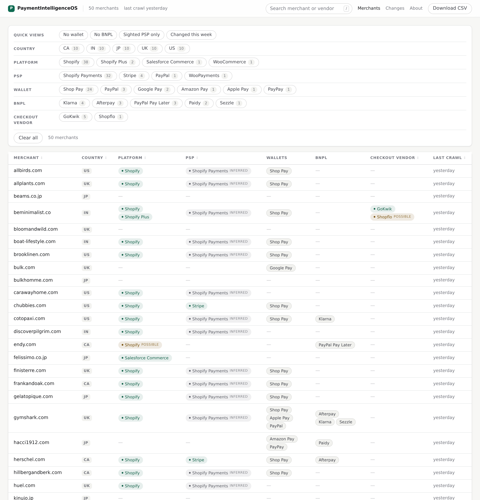
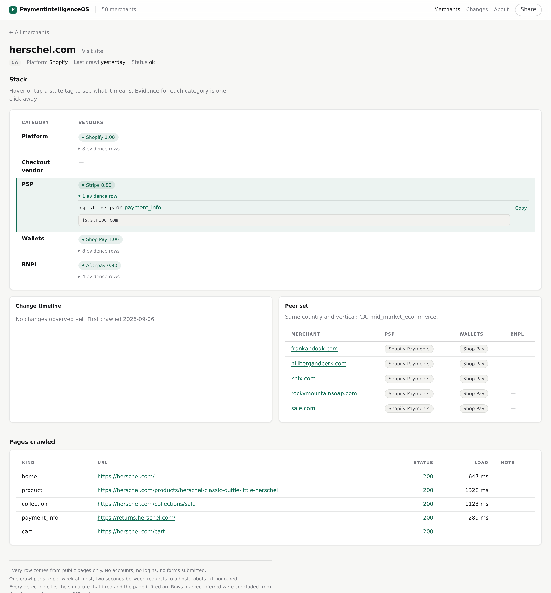
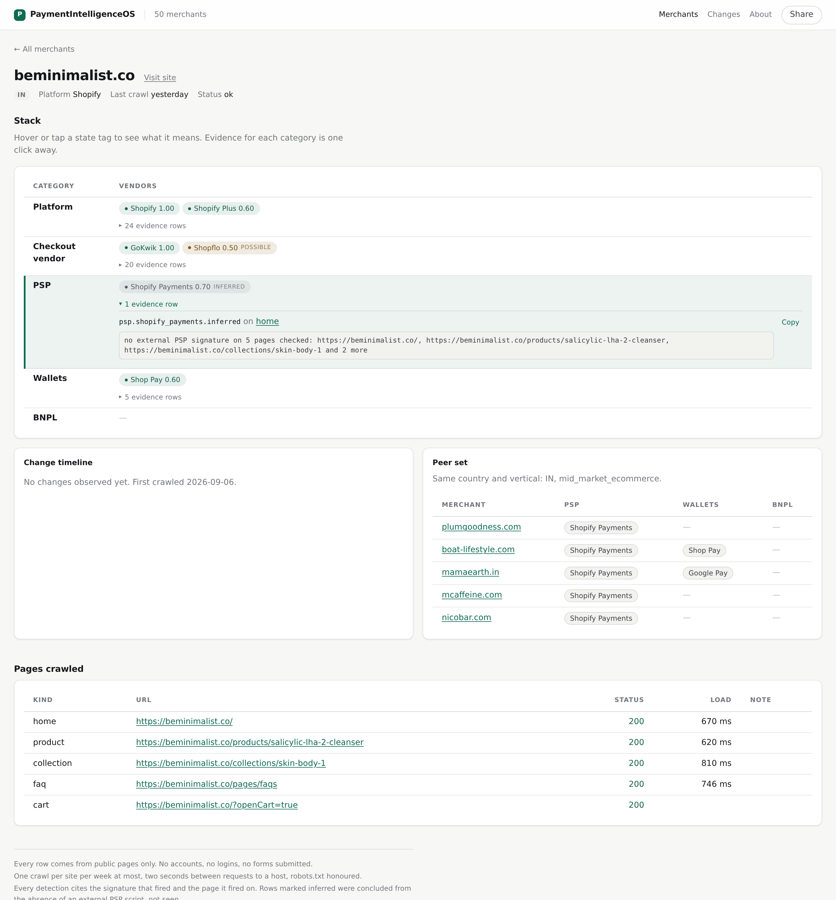

Fifty merchants across five countries, 170 signatures, and one rule: never report an assumption as an observation.
Payments teams guess at what a prospect already runs. Existing stack-detection tools report a platform and sometimes a gateway, but they flatten everything into a single verdict: you cannot tell what was observed from what was assumed. For a payments conversation that distinction is the whole point. "They use Stripe" and "they are on Shopify, so probably Shopify Payments" are different claims, and only one of them survives contact with the merchant.
I built a crawler that reads public pages only. No accounts, no logins, no forms submitted, robots.txt honoured, two seconds between requests, at most six pages per site and one crawl per site per week. Detection is deterministic signature matching with no model in the path, and every detection stores the signature id, the page URL and the matched snippet, capped at 200 characters.
Fifty merchants across the US, Canada, the UK, Japan and India. Forty-eight crawled cleanly. 170 signatures covering 61 vendors across platform, PSP, wallet, BNPL and checkout vendor. Fifty merchants is a sample, not a census. The regional finding below is a hypothesis worth testing at scale, not a market statistic.

Three states, not one. Sighted, possible and inferred are recorded separately and shown separately. This matters most for PSP: on a Shopify store the processor cannot be sighted at all, because Shopify Payments is server-side and emits no client-side script. PSP coverage is 10 percent sighted and 75 percent once the platform-native inference is applied. Reporting only the higher number would have been the flattering choice and the wrong one.

psp.stripe.js firing on the payment-info page, with the matched snippet stored next to it.Deleting the browser step. To sight PSPs directly I built a headless browser that added an item to the cart and opened checkout. Standard Shopify robots.txt disallows /cart and /checkout, which we honour, so I tested it on five sites whose robots.txt permits both. One reached a checkout. It carried no PSP scripts, for the reason above. I deleted the feature rather than carry unproven code, and wrote down why.
Coverage across the sample: platform 77 percent, wallets 54 percent, BNPL 10 percent, checkout vendor 17 percent.
The finding worth the whole exercise is regional. Half the Indian merchants sampled, five of ten, run a third-party checkout vendor between the store and the PSP: GoKwik on all five, with Shopflo showing as a weaker signal on one of them. That layer appears on no merchant in the other four countries. It changes who the commercial conversation is with, because the checkout vendor owns the payment method mix that the PSP used to own.

Separately, making the unknown-host leaderboard show only hosts nobody had reviewed yet immediately exposed two live detection misses: a Square subdomain my pattern had pinned one level too deep, and a Klarna EU domain no pattern covered. Both were on sites already crawled. Both are fixed.
Start from the question, not the crawler. The checkout-vendor layer was the most commercially interesting output and I found it incidentally. Sampling India deliberately on day one would have surfaced it in an afternoon.
Build the review queue first. The unknown-host list was noise for a week because reviewed hosts were never marked as reviewed. It found two real bugs within a minute of being cleaned.
Accept the ceiling earlier. No amount of crawler work sights a processor behind a server-side platform. That is a signal problem, not an engineering one, and the next version should spend its effort on non-Shopify merchants and on checkout pages that are actually permitted, rather than on a better browser.